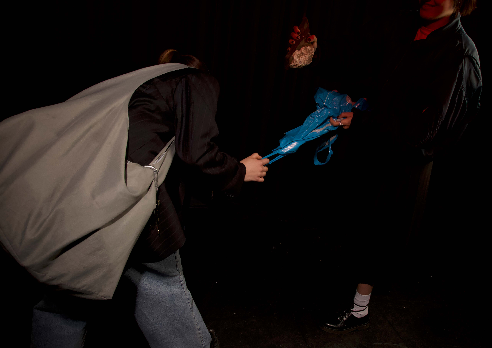
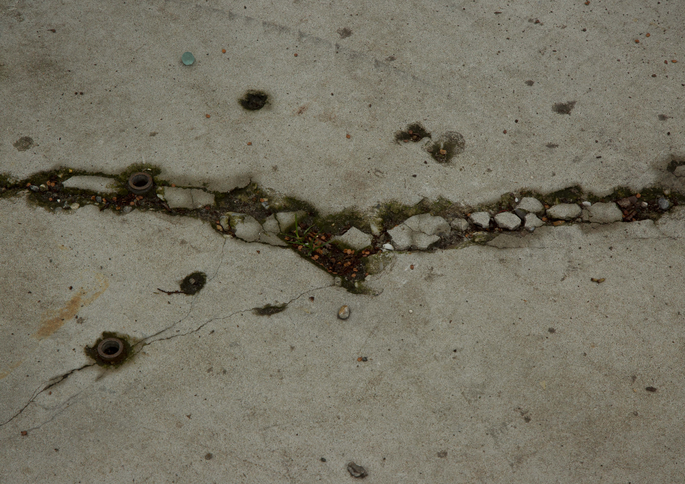
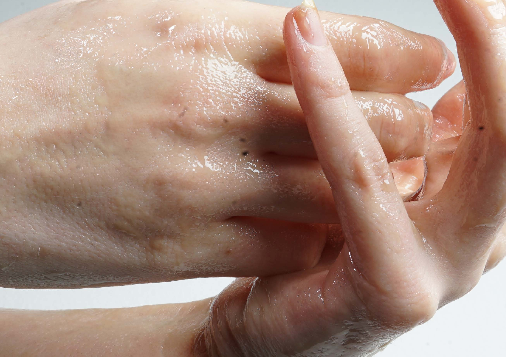
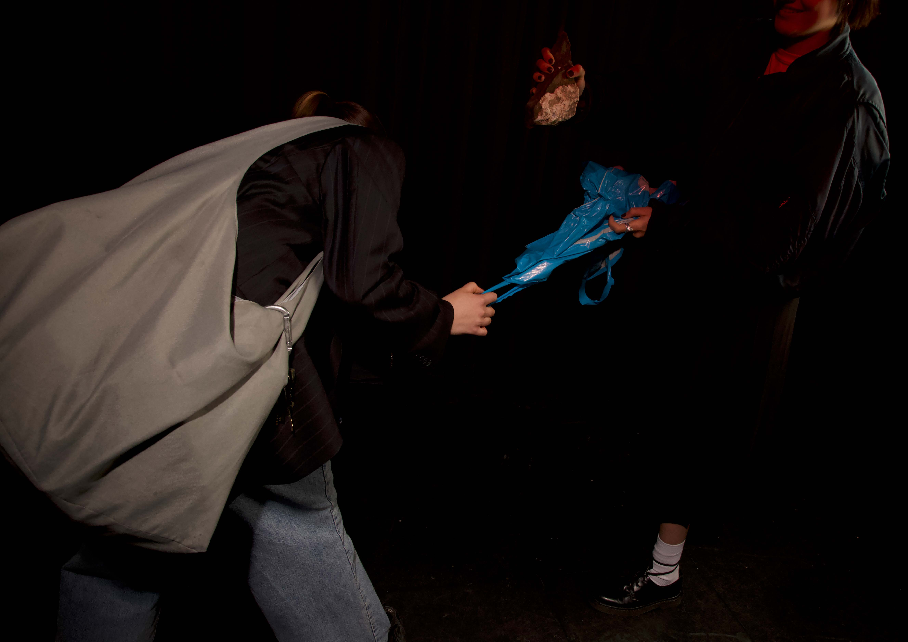
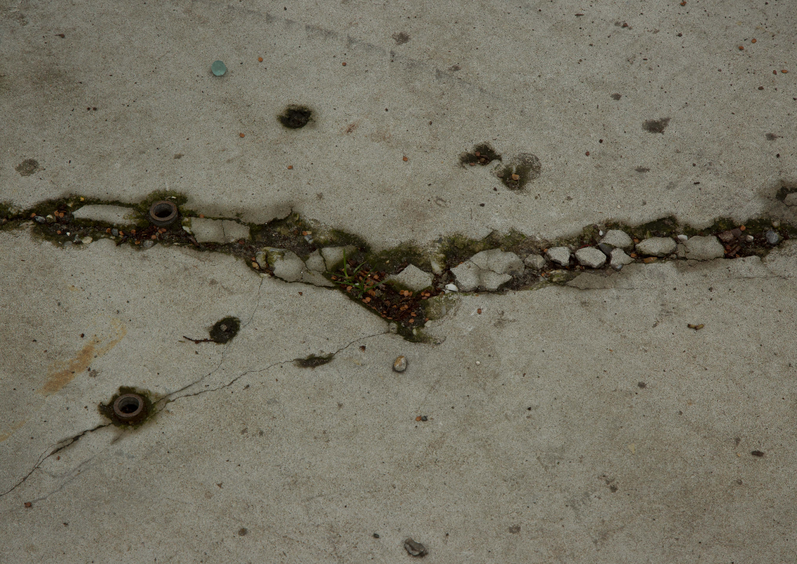
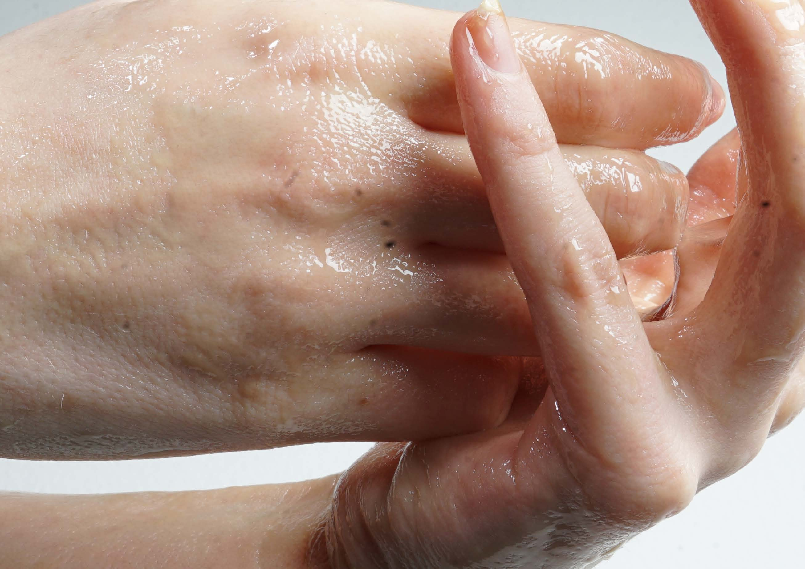

olvehyh
« Su Studio Photography »
A series of experimental photographs shot and edited for studio photography course.
Studio Photography | Color Grading | Set Design
Den Haag 2024
Camera: Canon E0S
Den Haag 2024
Camera: Canon E0S


 




